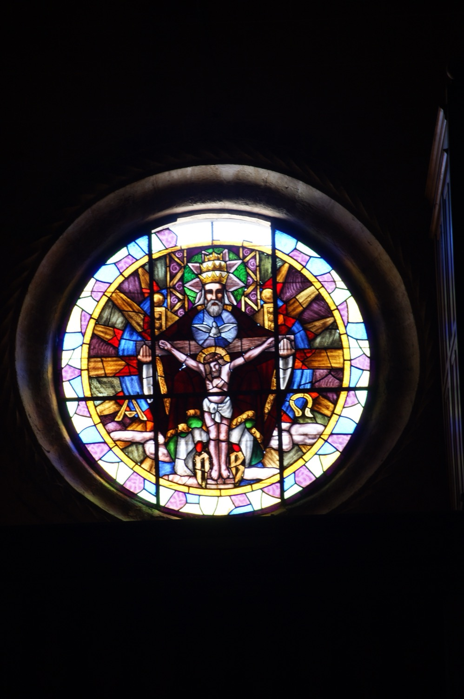

Representació del Pare, el Fill i l'Esperit Sant. Déu Pare sosté els dos braços de la creu en la que el Fill està crucificat i l'Esperit Sant hi és representat, com és habitual, en forma de colom. Als dos costats del Fill hi apareixen la primera i la darrera lletra de l’alfabet grec, Alfa (A) i Omega (Ω), en referència a les paraules Jesucrist “jo sóm l’Alfa i l’Omega, el primer i el darrer, el principi i la fi”.
Les inicials de la part inferior del vitrall són les del donant que en finançà la confecció.